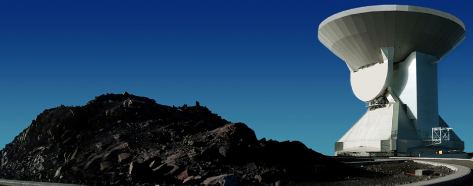
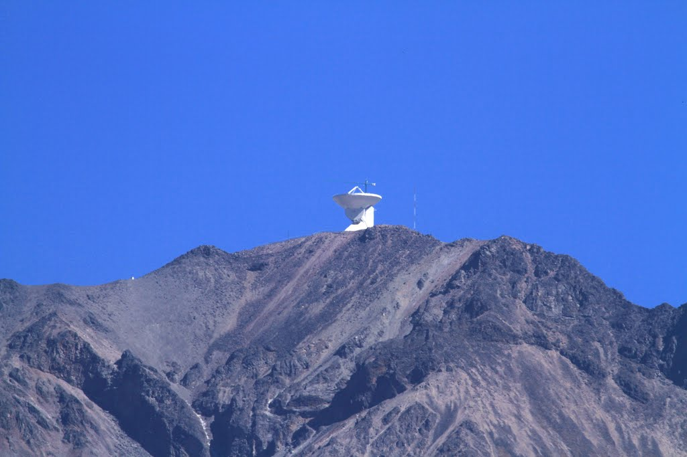
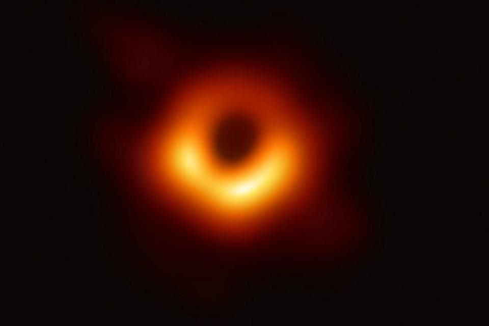

Inicio
Programas
Contacto
Instituto de Astronomía
Imágenes del Gran Telescopio Milimétrico de Puebla.

Gran Telescopio en pleno funcionamiento
Desde este telescopio se pueden observar las ondas de radio de todo el universo.
Click a la imagen para ir a Programas

Localización del telescopio
Instalado en la cima del volcán extinto Sierra Negra en Puebla, México.
Click a la imagen para ir a Contacto

Telescopio de horizonte de eventos
Observación del agujero negro supermasivo de nuestra galaxia.
Previous
Next